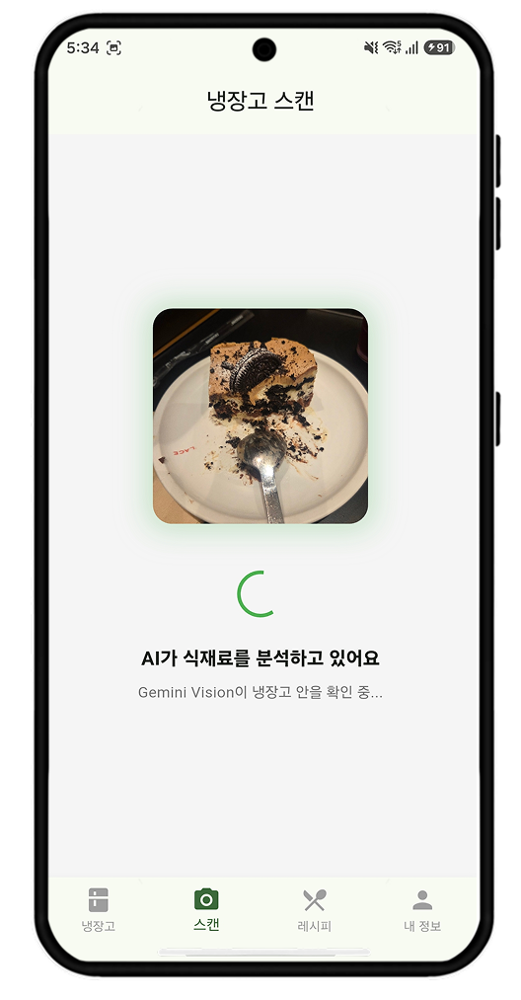
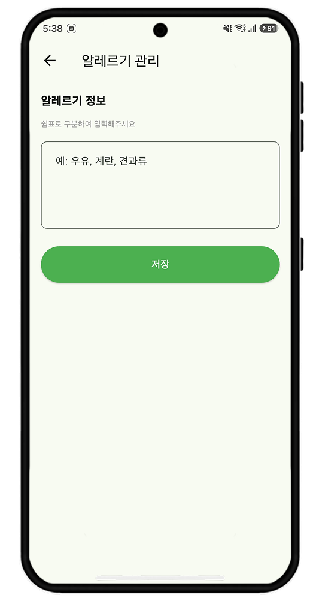

IT 기술영업 지원 · shinhyeji203@gmail.com · github.com/hyeji203
컴퓨터소프트웨어학과에서 웹과 앱 서비스를 직접 만들어 왔습니다. 이 포트폴리오에는 프로젝트 3개와, 프로젝트를 하면서 작성한 문서, 사용자 불편을 찾아 고친 과정을 정리했습니다.
| 문서 작성 | 기술을 고를 때마다 대안을 비교한 문서를 남겼습니다(3건). 기획서, 작업 일정표(WBS), 리스크 관리표도 직접 작성했습니다. 4쪽 |
|---|---|
| 사용자 불편 분석 | 레시피 추천 앱의 13개 화면을 휴리스틱 기준으로 평가해 문제점과 개선안을 정리했고, 우선순위 1~8번을 직접 고쳤습니다. 3쪽 |
| 팀 협업 | 3인 팀 프로젝트를 두 번 했습니다. 기능별로 역할을 나누고, 일정표와 중간 점검일을 정해 진행했습니다. 2쪽 |
| 이름 | 내용 | 기간 | 인원 |
|---|---|---|---|
| 도와줘, 맵! (졸업작품) | 밤길에 덜 위험한 경로를 안내하는 웹 지도 서비스 | 2026.09 ~ 11 | 3명 |
| 냉장고 요리사 | 냉장고 사진으로 재료를 인식해 레시피를 추천하는 앱 | 2026.05 ~ 10 | 3명, 이후 개인 개선 |
| Delay Detective | 미루는 일의 이유를 묻고 작게 나눠 주는 할 일 앱 | 2026.05 ~ 06 | 개인 |
| 사용해 본 기술 | Spring Boot, MySQL, Oracle, Firebase, WebSocket, React, Flutter, AI API 연동 |
|---|
1
프로젝트 1
길찾기 서비스는 보통 가장 빠른 길을 알려줍니다. 하지만 밤에는 빠른 길이 어둡거나 인적이 드문 경우가 있어서, 가로등 데이터와 사용자 위험 제보를 반영해 덜 위험한 경로(안심경로)를 최단경로와 같이 보여주는 서비스를 만들었습니다.
팀에서 지도와 경로 탐색을 맡았습니다.
데이터상으로는 문제가 없어 보여도 실제 길과 다른 부분이 있어서, 시연 지역을 확인하면서 경로 오류를 고쳤습니다.
| 문제 | 수정 | 결과 |
|---|---|---|
| 지도 데이터에서 학교 안 길이 큰길과 끊겨 있어서 멀리 돌아가는 경로가 나왔습니다. | 횡단보도 건너편의 끊긴 길을 이어 줬습니다. | 600m에서 466m로 |
| 위험 제보 1건 때문에 15m 옆 다른 도로 120m 전체가 위험 구간이 됐습니다. | 제보 위치와 가장 가까운 길에만 반영하도록 바꿨습니다. | 불필요한 우회 없어짐 |
| '어두운 길' 판단이 실제로 걸어 본 느낌과 달랐습니다. | 가로등 개수, 길이 대비 밀도, 25m 간격 순으로 기준을 세 번 바꿨습니다. | 실제와 비슷해짐 |
2
프로젝트 2
팀 프로젝트가 끝나고 앱을 다시 써 보니 불편한 부분이 많이 보였습니다. 그래서 닐슨의 사용성 평가 기준(휴리스틱)으로 13개 화면을 하나씩 평가하고, 화면마다 문제점과 개선 방안을 PPT로 정리했습니다. 그중 우선순위가 높은 1~8번을 직접 고쳤습니다.

문제 분석이 얼마나 걸리는지 표시가 없어서 기다리는 동안 멈춘 건지 알 수 없었습니다.
수정 업로드 진행률과 경과 시간을 보여주고, 분석 취소 버튼을 넣었습니다. 다른 탭에 갔다 와도 분석 상태가 유지되게 했습니다.

문제 알레르기를 쉼표로 직접 입력하는 방식이라 오타가 나면 필터링이 안 될 수 있었습니다.
수정 목록에서 고르거나 자동완성으로 입력하게 바꾸고, 추천 레시피에서 알레르기 재료를 빼도록 했습니다.
레시피 랭킹 기능도 생각했지만, 지금 구조에서는 레시피를 사용자마다 따로 만들어 저장하기 때문에 랭킹을 매길 수가 없었습니다. 데이터 구조를 먼저 바꿔야 한다는 점을 개선안 문서에 같이 적어 두었습니다.
3
프로젝트 3
혼자 기획부터 개발까지 한 프로젝트입니다. 나중에 왜 이렇게 만들었는지 설명할 수 있도록, 기술을 고를 때마다 비교한 내용을 문서로 남겼습니다.
조건은 세 가지였습니다. 인터넷이 없어도 쓸 수 있어야 하고, 여러 기기에서 같은 데이터를 볼 수 있어야 하고, 6주 안에 끝내야 했습니다.
| 방법 | 장점 | 단점 | 결과 |
|---|---|---|---|
| A. Firebase + 기기 내 저장 | 인터넷 없이도 동작, 서버를 따로 운영할 필요 없음, 무료 범위로 충분 | 동기화 기능을 직접 만들어야 함 | 선택 |
| B. Supabase | SQL 사용 가능, 실시간 기능 | 오프라인용 저장소를 따로 붙여야 함, 국내 자료가 적음 | 제외 |
| C. 서버 직접 구축 | 원하는 대로 만들 수 있음 | 서버 개발과 운영까지 하면 6주 안에 어려움 | 제외 |
| D. 기기 내 저장만 사용 | 가장 간단함 | 기기를 바꾸면 데이터가 사라지고, 여러 기기 사용 불가 | 제외 |
A를 골랐고, 단점이었던 동기화 문제는 리스크 관리표에 따로 올려서 관리했습니다.
| 리스크 | 가능성 | 영향 | 대응 |
|---|---|---|---|
| 중간 발표 전에 화면을 다 못 만듦 | 높음 | 높음 | 꼭 필요한 기능 6개를 먼저 끝내고, 나머지는 다음 주로 미룸 |
| 기기끼리 데이터가 충돌함 | 중간 | 중간 | 나중에 수정한 내용을 기준으로 맞추고, 수정 시각이 같을 때만 사용자에게 물어봄 |
| AI 응답이 느리거나 비용이 많이 나옴 | 중간 | 높음 | 개발할 때는 가짜 응답을 쓰고, 호출 횟수에 제한을 둠 |
기획서(PRD), 작업 일정표(WBS), 기술 비교 문서 3건, 리스크 관리표, 배포·테스트 안내 문서
개발을 하면서 문서를 쓰는 일이 생각보다 잘 맞았습니다. 기술을 이해하는 사람으로서 고객과 기술팀 사이에서 일하고 싶어 IT 기술영업에 지원했습니다.
4